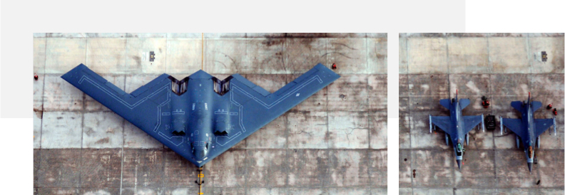

4.1 Introduction
The visual design section of the BES User Experience Playbook catalogues and describes the best practices of digital visual design, and how they inform logistics information application user experiences. These best practices are illustrated with examples from existing USAF applications, as well as "hybrid” components where necessary to provide a unique visualization.

This is not a style guide. This content is intended as a teaching tool, to complement technical documentation from other design and development playbooks. The visualizations are not intended as redesigns of existing or new applications, but rather guidelines for making decisions within the context of your own design systems. When designing specific user interface components, first consult your application’s style guide, then refer to this playbook should any questions remain.
This content also exists as a living document. As USAF applications, best practices, and use cases continue to evolve, so too will this document and the examples herein.